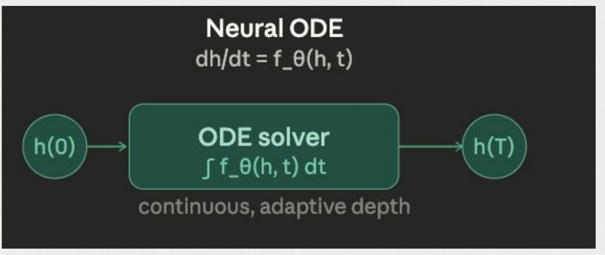
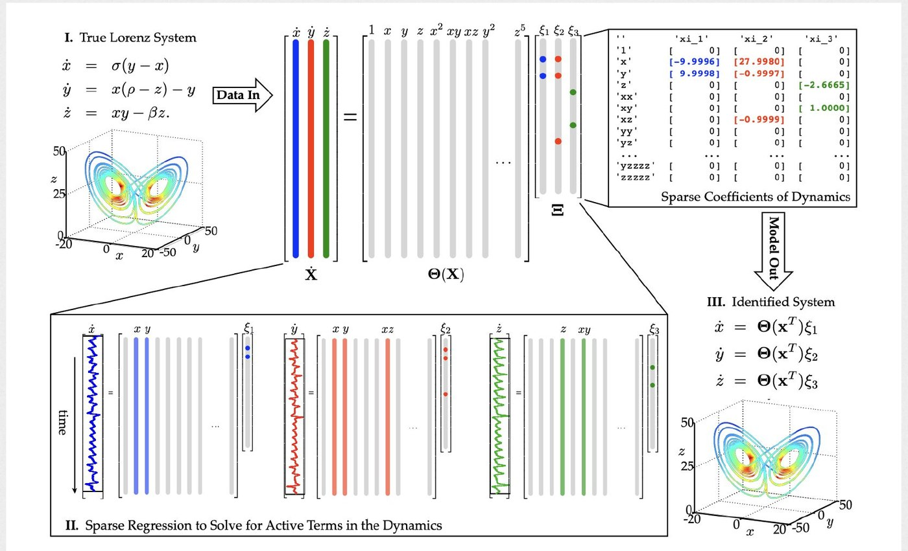
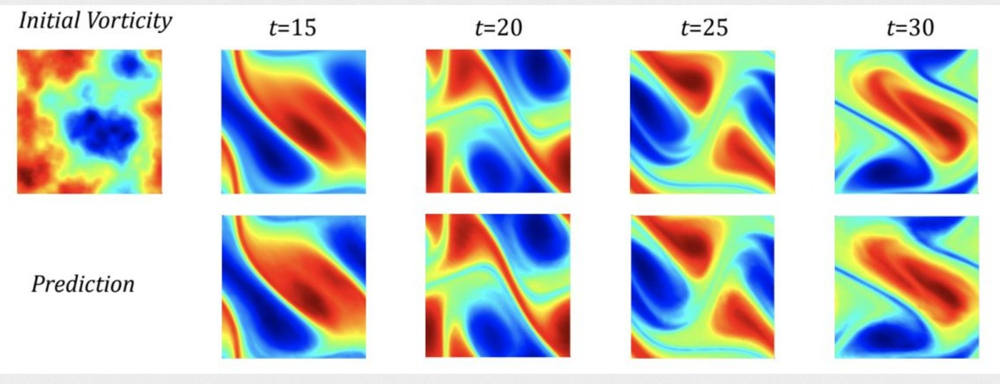

Physics-ML
Models of physical systems do better when they respect what is already known about the physics. I work on generative models for dynamical systems, and on how to tell whether methods that steer them are doing what they claim.
Time conditioning in diffusion and flow-matching transformers
I'm writing a survey of how diffusion and flow-matching transformers are conditioned on physical time, for weather, molecular dynamics, and PDE forecasting. It covers adaptive layer norm and Fourier time embeddings, lag sampling, time-coupled diffusion, and attention-based embeddings, and it unifies the formulations of GEM-3, Implicit Transfer Operators, and dynamics-informed diffusion.
I'm also designing an attention-based time-conditioning mechanism for diffusion transformers, with an ablation suite on simulated Lorenz '96 data.
An exact answer key for guided flow matching
Guidance methods for flow matching, such as projecting samples onto a hard constraint or steering them with feedback control, are usually judged by how good the samples look. That is hard to trust, because there is rarely a ground truth to compare against.
When the data distribution is Gaussian, or a Gaussian process, the exact guided distribution is available in closed form. I'm using that as an answer key to audit these methods, and to measure how far each one lands from the exact result.
Physics ML seminar
I led a seminar that introduced physics ML to a general ML audience. We framed the field as two directions: putting physical knowledge into learning, and using learning to speed up or discover physics. Open a topic to see what we covered.
Physics-informed neural networks
Add the governing equation to the loss, and a network fit to a few noisy samples of a damped oscillator stays near the true solution in places where a standard network drifts away. The physics term acts as a regularizer that needs no extra data.
Neural ODEs
Instead of learning a map directly, learn the vector field and let an ODE solver produce the output. The depth of the model becomes continuous and adapts to the problem.

SINDy
Build a library of candidate terms and use sparse regression to keep only the few that govern the system, so the learned model comes out as an equation you can read. I later used it to study the denoising dynamics of a diffusion model, described in Latent dynamics in diffusion models.

Fourier neural operators
Learn the map from one function to another, with the work done in Fourier space. The model does not depend on a particular grid, and it can solve PDE families such as Navier–Stokes much faster than a numerical solver.

The seminar closed with applications: Gaussian processes for uncertainty, graph neural networks in computational chemistry, and physics engines in robotics.